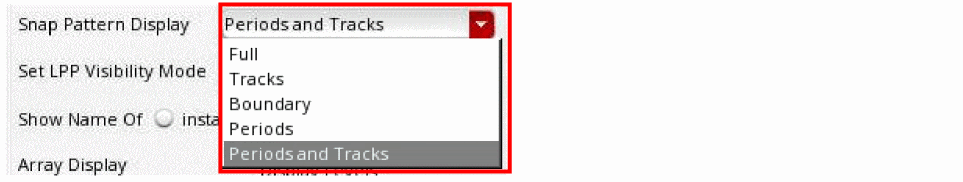
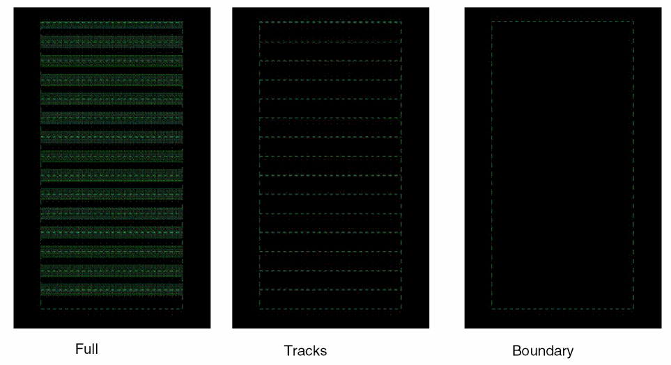

Controlling the Display of Snap Patterns
You can display a fin grid or the full fin shapes inside fin boundaries. You can switch between the full fin detail display, which is used to debug fin alignment-related DRC violations, and the high-level fin boundary display, which is used to focus on wiring and placement without being distracted by fin shapes. You can display the boundary, tracks, or both for snap patterns.
To control the display of snap patterns:
-
In the layout window, choose Options – Display.
The Display Options form opens. The Snap Pattern Display list shows the snap pattern displays available.
 -
Select one of the following from the Snap Pattern Display list:
- Full: Displays the snap pattern boundary, tracks, fins, and width spacing patterns periods.
- Tracks: Displays the snap pattern boundary and tracks.
- Boundary: Displays only the snap pattern boundary.
- Periods: Displays only the width spacing pattern periods.
-
Periods and Tracks: Displays width spacing pattern periods and tracks.

- Click OK.
You can use the
Related Topics
Return to top